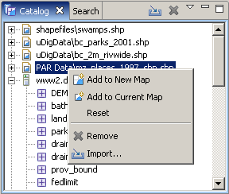

Use of Views¶
A view is a visual component within the Workbench. It is typically used to navigate a hierarchy of information (such as the layers in a Map), open an editor or display properties.
Modifications made in a view are saved immediately. Normally, only one instance of a particular type of view may exist within a Workbench window.
Views support editors and provide alternative presentations or navigations of the information in the Workbench. For example:

The Catalog view displays all data services known to the application along with the names of the layers within them. The Projects view displays the projects and other resources. A view might appear by itself or stacked with other views in a tabbed notebook.
To activate a view that is part of a tabbed notebook, simply click its tab. The Workbench provides a number of quick and easy ways to configure an environment, including whether the tabs are at the bottom or top of the notebooks.
Views have three menus. The first, which is accessed by right clicking on the view’s tab, allows the view to be manipulated in much the same manner as the menu associated with the Workbench window.

The second menu, called the “view pull-down menu”, is accessed by clicking the down arrow . The view pull-down menu typically contains operations that apply to the entire contents of the view, but not to a specific item shown in the view. Operations for sorting and filtering are commonly found on the view pull-down.

Finally, the contents of a view may have a context menu. This menu is determined by the item selected in the view, and thus provides consistent functionaly across all views.

A view can be displayed by selecting it from the Window ‣ Show View menu. Additional views are available by choosing Other... at the bottom of the Show View submenu. This is just one of the many features that provide for the creation of a custom work environment.
Related reference